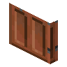

金合欢四扇板门
Acacia Four Panel Door
英文名: Acacia Four Panel Door命名空间 ID:
mcwdoors:acacia_four_panel_door类型: 方块所属模组: Macaw's Doors资料检索: 🔎 在 MC百科 搜索「金合欢四扇板门」所属标签
合成获得 (1)
有序合成Macaw's Doors
原始 JSON
{
"type": "minecraft:crafting_shaped",
"group": "four_panel",
"pattern": [
"A",
"B",
"A"
],
"key": {
"A": {
"item": "minecraft:acacia_planks"
},
"B": {
"item": "mcwdoors:print_dark_oak"
}
},
"result": {
"count": 1,
"id": "mcwdoors:acacia_four_panel_door"
}
}